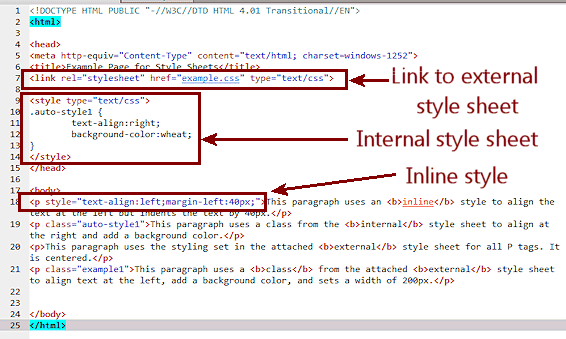

CSS is designed primarily to enable the separation of document content from document presentation, including aspects such as the layout, colors, and fonts.[3] This separation can improve content accessibility, provide more flexibility and control in the specification of presentation characteristics, enable multiple HTML pages to share formatting by specifying the relevant CSS in a separate .css file, and reduce complexity and repetition in the structural content, such as semantically insignificant tables that were widely used to format pages before consistent CSS rendering was available in all major browsers. CSS makes it possible to separate presentation instructions from the HTML content in a separate file or style section of the HTML file. For each matching HTML element, it provides a list of formatting instructions. For example, a CSS rule might specify that "all heading 1 elements should be bold", leaving pure semantic HTML markup that asserts "this text is a level 1 heading" without formatting code such as a
